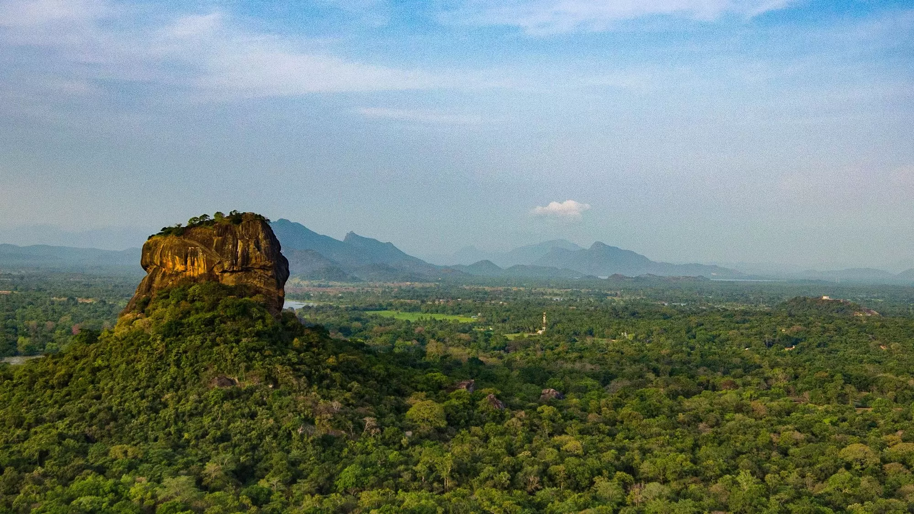
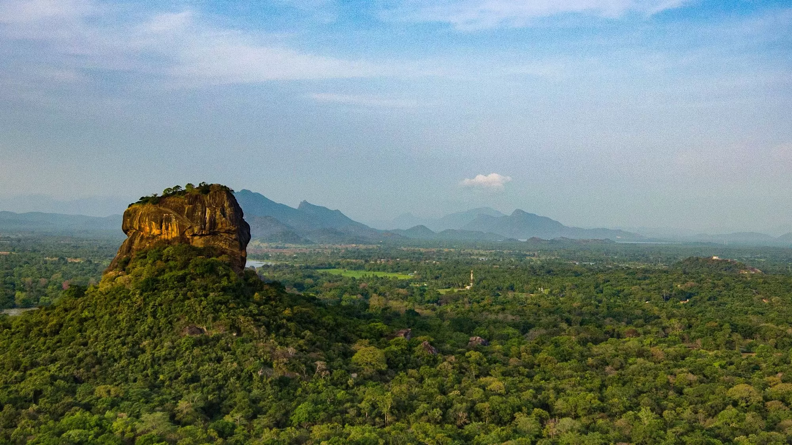
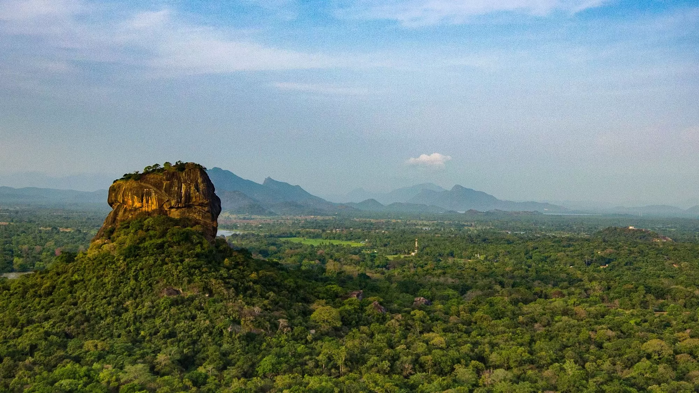
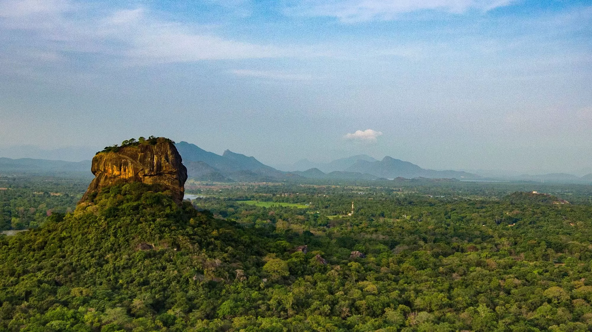
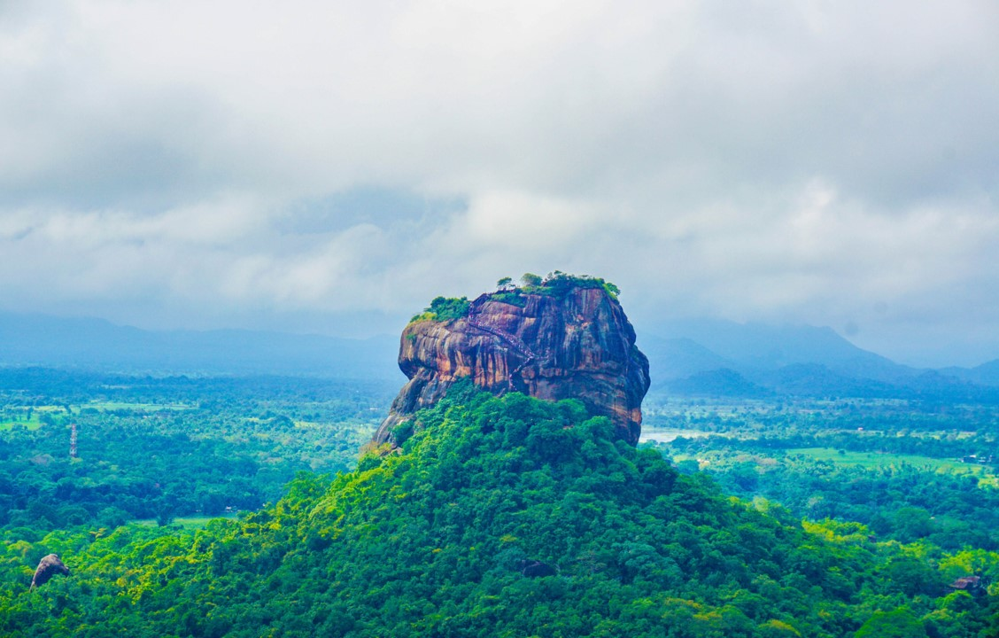
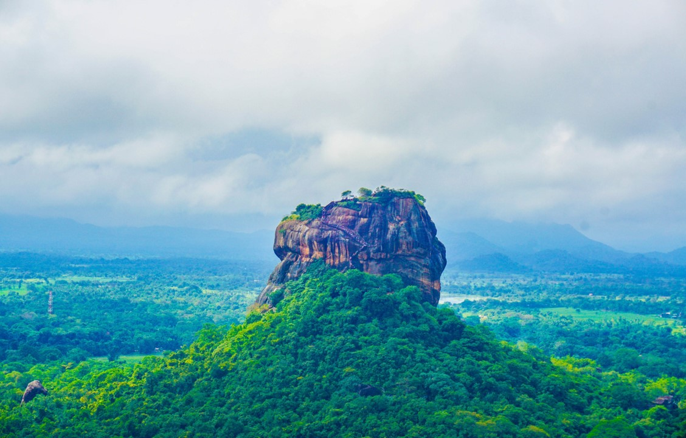
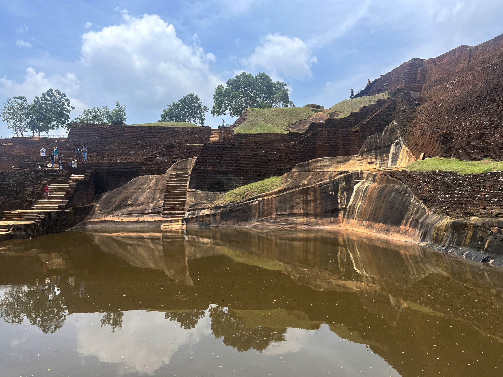
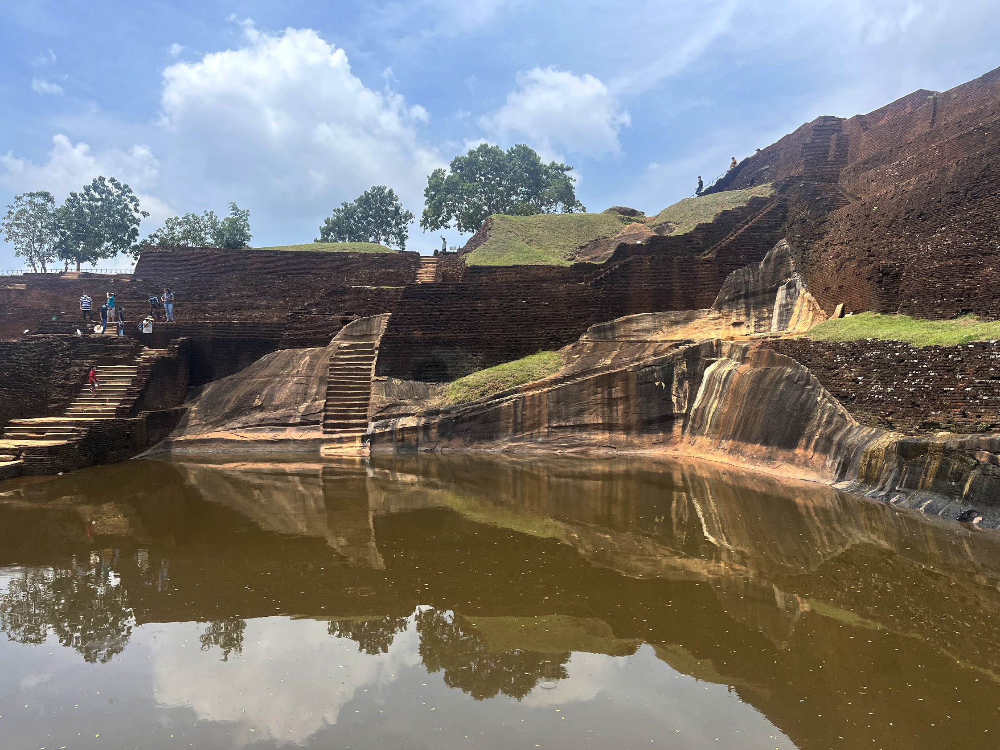
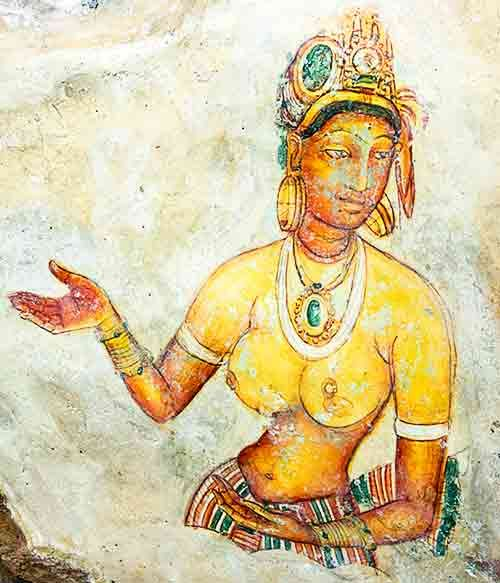
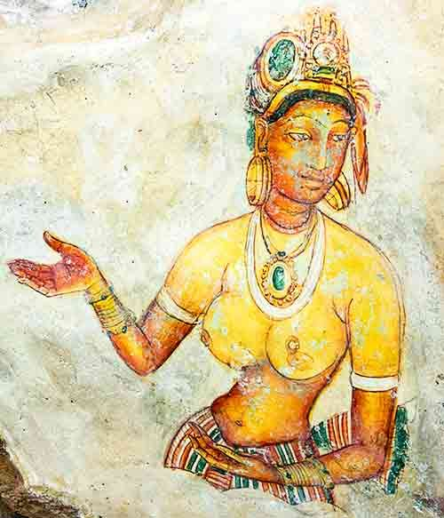

සීගිරිය or සිංහගිරි (සිංහ ගල සිංහල: සීගිරිය, දෙමළ: சிகிரியா/சிங்ககிரி) එය ශ්රී ලංකාවේ මධ්යම පළාතේ දඹුල්ල
නගරයට ආසන්නයේ උතුරු මාතලේ දිස්ත්රික්කයේ පිහිටි පුරාණ ගල් බලකොටුවකි. එය ආසන්න වශයෙන් 180 m (590 ft) පමණ
උසැති දැවැන්ත පාෂාණ තීරුවකින් ආධිපත්යය දරන ඓතිහාසික හා පුරාවිද්යාත්මක වැදගත්කමක් ඇති ස්ථානයකි.
පුරාණ ශ්රී ලාංකේය වංශකථාවක් වන කුලවංශයට අනුව, මෙම ප්රදේශය විශාල වනාන්තරයක් වූ අතර, පසුව කුණාටු සහ නායයෑම්
නිසා එය කන්දක් බවට පත් වූ අතර, කාශ්යප රජු (ක්රි.ව. 477-495) විසින් ඔහුගේ නව අගනුවර සඳහා තෝරා ගෙන ඇතිබවයි.
ඔහු මෙම පර්වතය මුදුනේ තම මාලිගාවක් ගොඩනඟා එහි පැති වර්ණවත් බිතුසිතුවම් වලින් සරසා ඇත. මෙම පර්වතයේ අඩක් පමණ
ඉහළට කුඩා සානුවක ඔහු දැවැන්ත සිංහයෙකුගේ ස්වරූපයෙන් දොරටුවක් ඉදි කළේය. මෙම ස්ථානයේ නම මෙම ව්යූහයෙන්
ව්යුත්පන්න වී ඇත; සිංහගිරි, සිංහ පර්වතය (සිංගප්පූරුවේ සංස්කෘත නාමය වන සිංහපුරට සමාන ව්යුත්පන්නයකි).
රජුගේ මරණයෙන් පසු අගනුවර සහ රජ මාලිගය අත්හැර දමන ලදී. එය 14 වන සියවස දක්වා බෞද්ධ ආරාමයක් ලෙස භාවිතා කරන
ලදී. සීගිරිය අද යුනෙස්කෝ ලෝක උරුම අඩවියකි. එය පැරණි නාගරික සැලසුම්කරණයේ හොඳම සංරක්ෂිත උදාහරණයකි.
 

සීගිරිය ආශ්රිත ප්රදේශය ප්රාග් ඓතිහාසික යුගයේ සිට ජනාවාසව පැවති බව සිතිය හැක. ක්රි.පූ. 3 වැනි සියවස තරම්
ඈත අතීතයේ සිටම ඒ අවට ඇති බොහෝ පාෂාණ වාසස්ථාන සහ ගුහා බෞද්ධ භික්ෂූන් හා තාපසයන් විසින් අල්ලාගෙන සිටි බවට
පැහැදිලි සාක්ෂි තිබේ. සීගිරියේ මිනිස් වාසය පිළිබඳ පැරණිතම සාක්ෂිය වන්නේ සීගිරි පර්වතයට නැගෙනහිරින් ඇති අලිගල
පර්වත වාසස්ථානය වන අතර, එයින් පෙන්නුම් කරන්නේ මෙම ප්රදේශය මීට වසර පන්දහසකට පමණ පෙර මධ්යශිලා යුගයේදී අත්පත්
කරගෙන ඇති බවයි.
ක්රි.පූ. 3 වැනි සියවසේදී සීගිරි පර්වතය වටකර ඇති ගල්තලා සහිත කඳුකරයේ බටහිර හා උතුරු බෑවුම්වල බෞද්ධ ආරාම
ජනාවාස පිහිටුවන ලදී. මෙම කාලය තුළ පාෂාණ ආවරණ හෝ ගුහා කිහිපයක් නිර්මාණය විය. ලෙන් කට වටා කැටයම් කරන ලද කටාරම්
සහිත විශාල ගල්පර යට මෙම නවාතැන් සාදන ලදී. බොහෝ වාසස්ථානවල බිංදු කඳු අසල පාෂාණ ලිපි කැටයම් කර ඇති අතර,
වාසස්ථාන බෞද්ධ භික්ෂූන් වහන්සේට වාසස්ථාන ලෙස පරිත්යාග කිරීම සටහන් කරයි. මේවා ක්රිස්තු පූර්ව 3 වැනි සියවසත්
ක්රිස්තු වර්ෂ 1 වැනි සියවසත් අතර කාලය තුළ නිර්මාණය කර ඇත.
477 දී, රජුගේ බෑණනුවන් සහ හමුදාපති වූ මිගාරගේ සහාය ඇතිව කුමන්ත්රණයකින් පසුව, රාජකීය නොවන බිරිඳකගේ රජුගේ
පුත් I වන කාශ්යප, ධාතුසේන රජුගෙන් සිංහාසනය අල්ලා ගත්තේය. නියම උරුමක්කාරයා වූ මොග්ගල්ලාන තම ජීවිතය ගැන
බියෙන් දකුණු ඉන්දියාවට පලා ගියේය. මොග්ගල්ලානගේ ප්රහාරයකට බිය වූ කාශ්යප, අගනුවර සහ ඔහුගේ වාසස්ථානය
අනුරාධපුර සම්ප්රදායික අගනුවර සිට වඩාත් ආරක්ෂිත සීගිරිය වෙත ගෙන ගියේය. කාශ්යප රජුගේ පාලන සමයේදී (ක්රි.ව.
477 සිට 495 දක්වා), සීගිරිය සංකීර්ණ නගරයක් සහ බලකොටුවක් ලෙස සංවර්ධනය කරන ලදී. ආරක්ෂක ව්යුහයන්, මාලිගා
සහ උද්යාන ඇතුළු පාෂාණ කඳු මුදුනේ සහ ඒ අවට ඇති බොහෝ විස්තීර්ණ ඉදිකිරීම් මෙම යුගයේ සිට පැවත එන්නකි.
කාශ්යප රජු ධාතුසේන රජුගේ පුත්රයා ලෙස චූලවංශය විස්තර කරයි. කාශ්යප තම පියාව පණපිටින් පවුර දමා ඝාතනය කර,
පසුව සැබෑ බිසව විසින් ධාතුසේනගේ පුත්රයා වූ ඔහුගේ අර්ධ සොහොයුරු මොග්ගල්ලාන හට හිමිව තිබූ සිංහාසනය පැහැර
ගත්තේය. මොග්ගල්ලාන කාශ්යප විසින් ඝාතනය කිරීමෙන් බේරීමට ඉන්දියාවට පලා ගිය නමුත් පළිගන්නා බවට පොරොන්දු විය.
ඉන්දියාවේදී ඔහු නැවත පැමිණ ශ්රී ලංකාවේ සිංහාසනය නැවත ලබා ගැනීමේ අදහසින් හමුදාවක් ඇති කළේය, එය තමාගේ යැයි
ඔහු සැලකුවේය. මොග්ගල්ලානගේ නොවැළැක්විය හැකි පුනරාගමනය අපේක්ෂාවෙන්, කාශ්යප සීගිරි ශිඛරය මත තම මාලිගාව
බලකොටුවක් මෙන්ම විනෝද මාලිගාවක් ලෙස ගොඩනඟා ගත් බව පැවසේ. අවසානයේ මොග්ගල්ලාන පැමිණ, යුද්ධ ප්රකාශ කර,
ක්රිස්තු වර්ෂ 495 දී කාශ්යප පරාජය කළේය. සටනේදී කාශ්යපගේ හමුදාව ඔහුව අත්හැර දැමූ අතර ඔහු කඩුව මත වැටී
සියදිවි නසා ගත්තේය.
Cūḷavaṃsa සහ ජනප්රවාදයෙන් අපට දන්වන්නේ කාශ්යප නැඟී සිටි අලියා උපාය මාර්ගික වාසියක් ලබා ගැනීම සඳහා ගමන්
මාර්ගය වෙනස් කළ නමුත් රජු පසුබැසීමට තීරණය කළ බැවින් හමුදාව ඔහුව සම්පූර්ණයෙන්ම අත්හැරීමට පෙළඹවූ බැවින් හමුදාව
එම ගමන වැරදි ලෙස අර්ථකථනය කළ බවයි. යටත් වීමට නොහැකි තරම් ආඩම්බර වූ ඔහු තම කිනිස්ස ඉණ පටියෙන් ගෙන, උගුර කපා,
ආඩම්බරයෙන් කිනිස්ස ඔසවා, කොපුව දමා, මිය ගිය බව කියනු ලැබේ. මොග්ගල්ලාන සීගිරිය බෞද්ධ ආරාම සංකීර්ණයක් බවට
පරිවර්තනය කරමින් අගනුවර අනුරාධපුරයට ආපසු ලබා දුන්නේය, එය 13 වන හෝ 14 වන සියවස දක්වා පැවතුනි. මෙම කාල
පරිච්ඡේදයෙන් පසුව, 16 වන සහ 17 වන සියවස් දක්වා සීගිරිය පිළිබඳ කිසිදු වාර්තාවක් හමු නොවීය, එය කෙටියෙන් මහනුවර
රාජධානියේ මුරපොලක් ලෙස භාවිතා කරන ලදී.
ඉහලින් සීගිරි පර්වතය
විකල්ප කථා වල සීගිරියේ ප්රධාන නිර්මාතෘ ධාතුසේන රජු වන අතර කාශ්යප තම පියාට ගෞරව කිරීම සඳහා වැඩ නිම කළේය.
තවත් කථා වල කාශ්යප විස්තර කරන්නේ සෙල්ලක්කාර රජෙකු ලෙසය, සීගිරිය ඔහුගේ විනෝද මාලිගාව සමඟ ය. කාශ්යපගේ අවසාන
ඉරණම පවා අවිනිශ්චිතය. සමහර අනුවාදවල උපභාර්යාවකින් වස පානය කිරීමෙන් ඔහු ඝාතනය කෙරේ; තවත් සමහර විට ඔහු තම
අවසන් සටනේදී පාළුවට ගිය විට ඔහුගේම ගෙල කපා ගනී. තවමත් වැඩිදුර අර්ථකථන මෙම වෙබ් අඩවිය යුදමය කාර්යයකින් තොරව
බෞද්ධ ප්රජාවකගේ කාර්යයක් ලෙස සලකයි. පැරණි ශ්රී ලංකාවේ මහායාන සහ ථෙරවාදී බෞද්ධ සම්ප්රදායන් අතර තරගයේ දී
මෙම අඩවිය වැදගත් වන්නට ඇත.
මහාචාර්ය සෙනරත් පරණවිතානගේ සීගිරියේ කතාව නම් ග්රන්ථයේ දාතුසේන රජු සීගිරිය මත තම මාලිගාව තැනීම සම්බන්ධයෙන්
පර්සියානු නෙස්ටෝරියානු පූජක මාග බ්රාහ්මණගේ උපදෙස් ලබා ගත් බව සඳහන් වේ. පරණවිතාන පවසන පරිදි, මෙම කාලය තුළ
මංගලෝරයේ සිට මුරුන්ඩි සෙබළුන් රැගත් නැව් හැත්තෑපහකට අධික සංඛ්යාවක් ශ්රී ලංකාවට පැමිණ, දාතුසේන රජුගේ
ආරක්ෂාව සඳහා හලාවතට ගොඩ බැස්සේ, ඔවුන්ගෙන් වැඩි දෙනෙක් ක්රිස්තියානීන් ය. දාතුසේන රජුගේ දියණිය විවාහ වී
සිටියේ කිතුනුවකු වූ සිංහල හමුදාපති වූ මිගාර සමඟ ය.

 

1831 දී බ්රිතාන්ය හමුදාවේ 78 වැනි (හයිලෑන්ඩර්ස්) පාදමේ රෙජිමේන්තුවේ මේජර් ජොනතන් ෆෝබ්ස්, පොලොන්නරුවේ
සංචාරයකට ගොස් අශ්වාරෝහකව ආපසු එමින් සිටියදී, "පඳුරු වැසුණු සීගිරි කඳු මුදුන" හමු විය. සීගිරිය
පුරාවිද්යාඥයින්ගේ සහ පසුව පුරාවිද්යාඥයින්ගේ අවධානයට ලක්විය. සීගිරියේ පුරාවිද්යා කටයුතු 1890 ගණන්වල කුඩා
පරිමාණයෙන් ආරම්භ විය. එච්.සී.පී. සීගිරිය පිළිබඳ පුළුල් පර්යේෂණ සිදු කළ පළමු පුරාවිද්යාඥයා බෙල් ය. ශ්රී
ලංකා රජය විසින් දියත් කරන ලද සංස්කෘතික ත්රිකෝණ ව්යාපෘතිය 1982 දී සීගිරිය කෙරෙහි අවධානය යොමු කරන ලදී. මෙම
ව්යාපෘතිය යටතේ ප්රථම වරට පුරාවිද්යා කටයුතු මුළු නගරයේම ආරම්භ විය. පාදවලට ඉහළින් සිංහ හිසක් සහ දොරටුව දෙපස
සිංහ හිසක් තිබූ නමුත් හිස වසර ගණනාවකට පෙර කඩා වැටුණි.
සීගිරිය 5 වන සියවසේදී කාශ්යප රජු විසින් ඉදිකරන ලද පුරාණ බලකොටුවකින් සමන්විත වේ. සීගිරිය අඩවියේ පර්වතයේ
සමතලා මුදුනේ පිහිටා ඇති ඉහළ මාලිගාවක නටබුන්, සිංහ ද්වාරය සහ එහි බිතුසිතුවම් සහිත කැටපත් පවුර ඇතුළත් මැද
මට්ටමේ ටෙරස්, පහත මාලිගා පර්වතයට පහළින් බෑවුම් වලට ඇලී තිබේ. මාලිගාවේ දිය අගල්, බිත්ති සහ උද්යාන පර්වතය
පාමුල සිට මීටර් සිය ගණනක් දක්වා විහිදී ගියේය. මෙම ස්ථානය මාලිගාවක් සහ බලකොටුවක් විය. පර්වතය මුදුනේ ඇති ඉහළ
මාලිගයට පර්වතයට කැපූ ජල පොකුණු ඇතුළත් වේ.
සීගිරිය පළමු සහස්රයේ වැදගත්ම නාගරික සැලසුම් අඩවිවලින් එකක් ලෙස සැලකෙන අතර, අඩවි සැලැස්ම ඉතා විස්තීර්ණ හා පරිකල්පනීය ලෙස සැලකේ. වටපිටාවේ මිනිසා විසින් සාදන ලද ජ්යාමිතික සහ ස්වභාවික ස්වරූප හිතාමතාම අන්තර් සම්බන්ධ කිරීම සඳහා සැලැස්ම සමමිතිය සහ අසමමිතිය පිළිබඳ සංකල්ප ඒකාබද්ධ කළේය. පර්වතයේ බටහිර පැත්තේ රාජකීයයන් සඳහා වන උද්යානයක්, සමමිතික සැලැස්මක් මත තබා ඇත; උද්යානයේ නවීන පෘෂ්ඨ/උප මතුපිට හයිඩ්රොලික් පද්ධති ඇතුළුව ජලය රඳවා ගැනීමේ ව්යුහයන් අඩංගු වන අතර ඒවායින් සමහරක් අද ක්රියාත්මක වේ. දකුණේ මිනිසා විසින් සාදන ලද ජලාශයක් අඩංගු වේ; මේවා ශ්රී ලංකාවේ වියළි කලාපයේ පෙර අගනුවර සිට බහුලව භාවිතා විය. ඇතුල්වීමේ දොරටු පහක් තබා ඇත. වඩාත් සවිස්තරාත්මක බටහිර දොරටුව රාජකීයයන් සඳහා වෙන් කර ඇති බව සැලකේ.
මුලදී මෙම බිත්තිය කෙතරම් පරාවර්තනය වීද යත්, රජු ඒ අසලින් ගමන් කරන විට තමාව දැකගත හැකි විය. ගඩොල් පෙදරේරු
වලින් සාදන ලද සහ ඉහළ ඔප දැමූ සුදු බදාමයකින් ආවරණය කර ඇති අතර, බිත්තිය දැන් අමුත්තන් විසින් ලියන ලද පද වලින්
අර්ධ වශයෙන් ආවරණය කර ඇත, ඒවායින් සමහරක් 8 වන සියවස තරම් මුල් කාලයට අයත් වේ. කෙසේ වෙතත්, බොහෝ ඒවා 9 වන සහ 10
වන සියවස් වලට අයත් වේ. කවියන්ගේ සිට පළාත් ආණ්ඩුකාරවරුන්ගේ සිට ගෘහණියන් දක්වා සෑම තරාතිරමකම මිනිසුන් බිත්තියේ
ලිවීය. භික්ෂූන් වහන්සේ පවා නිදහස් කළේ නැත; ඔවුන් ආදරය, උත්ප්රාසය සහ සියලු ආකාරයේ අත්දැකීම් වැනි විවිධ
විෂයයන් මත කවි ලිවීය. අනුරාධපුර යුගයේ හමුවන කාව්ය පිළිබඳ එකම සාක්ෂිය මෙයයි.
මෙම කාව්ය සාහිත්යමය වටිනාකමකින් යුක්ත වන්නේ ඒවායේ සංකීර්ණ සංකේතාත්මක භාවිතය සහ වචන ක්රීඩා ශිල්පීය ක්රම
නිසාය. එවැනි එක් උදාහරණයක් නම්;
ඇසිමි - දුන් - හසුන් - හසුන් - සෙයින් - විල් - දුත්
Aesimi - dun hasun - hasun - seyin - vil - dut
වැවක් දුටු පාත්තයින් මෙන් මම ඇය දුන් පණිවිඩයට සවන් දුන්නෙමි.
මුල - ලා - මා - සැනැහි - පුල් - පියුමන් - සේය් - බමර් - දුත්
Mula - la - ma - saenaehi - pul - piyuman - sey - bamar - dut
පිරිපුන් නෙළුම් මල් දුටු මී මැස්සෙකු මෙන් වික්ෂිප්ත වූ මාගේ සිත සනසාලීය.
පැරණි සිංහලයන් මහා කවියන් වූ බව මේ සොඳුරු යුගලයෙන් පෙනේ. ඔවුන්ට රිද්මය සහ මීටරය පිළිබඳ අපූරු හැඟීමක් තිබුණා
පමණක් නොව, හසුන් (පණිවිඩය) සහ හසුන් (හංසයන්) සමඟ සංයෝජනය කිරීමේදී අප දකින පරිදි 'වචන මත සෙල්ලම් කිරීම' යන
කාව්ය උපකරණයක් ද ඔවුන් වෙත යොමු විය. තම ආර්යාවගේ ආදරය ගැන ඇසීමට කවියා දක්වන උනන්දුව, නෙළුම් පිපීම සඳහා මී
මැස්සන්ගේ ආකර්ෂණයට සමාන වේ, එහි විශාල පෙති එහි මල් පැණි පානය කිරීමට සහ කැමති නම් විනෝද වීමට පහසු ගොඩබෑමක්
සපයයි.
කවි 1500කට වැඩි ප්රමාණයක් අතුරින් බොහෝමයක් ආමන්ත්රණය කර ඇත්තේ බිතුසිතුවම්වල සිටින කාන්තාවන්ටය. පිරිමින්
ඔවුන්ගේ අලංකාරය අගය කළ අතර කාන්තාවන් ඔවුන්ගේ ඊර්ෂ්යාව බෙදාහදා ගත්හ. පැහැදිලිවම බිතු සිතුවම්වලට එතරම් ඇල්මක්
නැති සමකාලීන ගැහැනියක්, ඒ හා සමානව උද්යෝගිමත් චිත්තවේගයන් වෙනස් ලෙස වාර්තා කරයි:
"කන්ද පැත්තේ මුව ඇස් ඇති තරුණියක් මගේ සිත තුළ කෝපයක් ඇති කරයි. ඇය අතේ මුතු නූලක් අල්ලාගෙන සිටින අතර ඇගේ දෑස්
තුළ ඇය මා සමඟ තරඟකාරී බවක් උපකල්පනය කරයි."
පැරණි ලියවිලිවල ආරක්ෂාව සඳහා දැන් කැටපත් පවුරේ තවදුරටත් ලිවීම තහනම් කර ඇත. ලංකාවේ පුරාවිද්යා කොමසාරිස්
සෙනරත් පරණවිතාන විසින් ක්රිස්තු වර්ෂ 8, 9 සහ 10 වැනි සියවස්වල ලියා ඇති පද්ය 685 ක් කැටපත් පවුරේ විකේතනය
කරන ලදී. මෙම දිගු-පසුගිය ශතවර්ෂවල එවැනි එක් කවියක්,
බුදල්මි
සියොර ආමි සිහිගිරි
බැලීමි ගි බොහො ජන
ලිතූයෙන් නොලිමි
පැරණි සිංහලෙන් දළ වශයෙන් පරිවර්තනය කර ඇත්තේ: "මම බුදල් [ලේඛකයාගේ නම]. සීගිරිය බලන්න සිය ගණනක් සෙනඟ සමඟ ආවා.
අනෙක් සියල්ලෝම කවි ලියූ නිසා මම එසේ නොකළෙමි!"
 


ජෝන් ස්ටිල් 1907 දී ලිව්වේ, "කඳුකරයේ මුළු මුහුණම යෝධ පින්තූර ගැලරියක් වී ඇති බව පෙනේ...
සමහරවිට ලෝකයේ විශාලතම පින්තූරය". මෙම සිතුවම් පර්වතයේ බටහිර මුහුණත බොහෝමයක් ආවරණය කර ඇති අතර එය මීටර් 140
(අඩි 460) දිග සහ මීටර් 40 (අඩි 130) උසකින් යුක්ත විය. මෙම සිතුවම්වල කාන්තාවන් 500 ක් ගැන ග්රැෆිටිවල සඳහන්
වේ. කෙසේ වෙතත්, බොහෝ දෙනෙක් සදහටම අහිමි වී ඇත. පාෂාණ මුහුණතෙහි ඇති බිතුසිතුවම්වලට වඩා වෙනස් තවත් බිතුසිතුවම්
වෙනත් තැන්වල දැකිය හැකිය, නිදසුනක් ලෙස "Cobra Hood Cave" නම් ස්ථානයේ සිවිලිමෙහි.
සීගිරියේ බිතු සිතුවම් නාග ගුහාවෙන් හමු විය
බිතුසිතුවම් අනුරාධපුර යුගයේ ලෙස වර්ගීකරණය කර ඇතත්, සිතුවම් විලාසය අද්විතීය ලෙස සැලකේ; අනුරපුර සිතුවම්වලට
වඩා වෙනස් වූ සිතුවම් රේඛාව සහ යෙදුම් විලාසය. රූපවල පරිමාව පිළිබඳ හැඟීම වැඩි දියුණු කරන ආකාරයෙන් රේඛා
පින්තාරු කර ඇත. තීන්ත එක් පැත්තක වැඩි පීඩනයක් භාවිතා කරමින්, අද්දර දෙසට ගැඹුරු වර්ණ තානයක බලපෑමක් ලබා
දෙමින්, අතුගා දැමීමේදී යොදන ලදී. අනුරාධපුර යුගයේ අනෙකුත් චිත්රවල චිත්ර ඇඳීමට සමාන ප්රවේශයන් ඇතත්, සීගිරි
ශෛලියේ කටු සටහන් රේඛා නොමැති අතර, ඒවාට වෙනස් කලාකරුවන්ගේ මායිම් රේඛාවක් ඇත. මෙම සිතුවම්වල සිටින කාන්තාවන්ගේ
සැබෑ අනන්යතාවය තවමත් තහවුරු වී නොමැත. ඔවුන්ගේ අනන්යතාවය ගැන විවිධ අදහස් තිබෙනවා. ඇතැමුන් විශ්වාස කරන්නේ
ඔවුන් රජවරුන්ගේ කාන්තාවන් ලෙස වන අතර තවත් අය සිතන්නේ ඔවුන් ආගමික වතාවත්වලට සහභාගී වන කාන්තාවන් බවයි. මෙම
පින්තූර ඉන්දියාවේ අජන්තා ගුහාවල දක්නට ලැබෙන චිත්රවලට සමීප සමානකමක් දක්වයි.
1967 ඔක්තෝබර් 14 වැනි දින බිතුසිතුවම්වලට තීන්ත ඉසීමෙන් විනාශකාරී සිද්ධියක් සිදු විය. රෝමයේ සංස්කෘතික දේපළ සංරක්ෂණය සහ ප්රතිසංස්කරණය පිළිබඳ අධ්යයනය සඳහා වූ ජාත්යන්තර මධ්යස්ථානයේ පුහුණුව ලැබූ විශේෂඥයෙකු වන ලුසියානෝ මරන්සි, 1968 අප්රේල් 11 වැනි දින දක්වා ප්රතිසංස්කරණය කිරීමට සහාය විය. පුරාවිද්යා දෙපාර්තමේන්තුව. බිතුසිතුවම්වල මුල් වර්ණ මැකී යන බවට දිගින් දිගටම අවධානය යොමු වී ඇති අතර, 2010 දී ඉදිරිපත් කරන ලද වාර්තාවක් සමඟින් බිතුසිතුවම් 22 1930 සිට මැකී ගොස් ඇති බවට යෝජනා කරයි.
සීගිරියේ උද්යාන ලෝකයේ පැරණිතම භූ දර්ශන උද්යාන අතර වන බැවින්, අඩවියේ වැදගත්ම අංගයන්ගෙන් එකකි. උද්යාන එකිනෙකට වෙනස් නමුත් සම්බන්ධිත ආකාර තුනකට බෙදා ඇත: ජල උද්යාන, ගුහා සහ ගල් උද්යාන සහ ටෙරස් උද්යාන.
බටහිර පරිශ්රයේ මධ්යම කොටසේ ජල උද්යාන දැකිය හැකිය. තුන්
ප්රධාන උද්යාන මෙහි දක්නට ලැබේ. පළමු උද්යානය ජලයෙන් වට වූ බිම් කැබැල්ලකින් සමන්විත වේ. එය සම්බන්ධ වේ
ප්රධාන පරිශ්රය වෙත ප්රධාන මාර්ග හතරක් භාවිතා කරමින්, එක් එක් කෝස්වේ හිසෙහි දොරටු තබා ඇත. මේ වත්ත
චාර් බෑග් ලෙස හැඳින්වෙන පුරාණ උද්යාන ආකෘතියට අනුව ඉදිකරන ලද අතර එය දැනට පවතින පැරණිතම මාදිලි වලින් එකකි
මෙම පෝරමය.
දෙවැන්න මාර්ගයේ දෙපස පිහිටුවා ඇති දිගු ගැඹුරු තටාක දෙකක් අඩංගු වේ. නොගැඹුරු, සර්ප ධාරා දෙකක්
මෙම තටාක වෙත යොමු කරන්න. කවාකාර හුණුගල් තහඩු වලින් සාදන ලද උල්පත් මෙහි තබා ඇත. භූගත ජල නල
විශේෂයෙන් වැසි සමයේදී තවමත් ක්රියාත්මක වන මෙම උල්පත් වලට ජලය සැපයීම. විශාල දෙකක්
දෙවන ජල උද්යානයේ දෙපස දූපත් පිහිටා ඇත. සමතලා මත ගිම්හාන මාලිගා ඉදිකර ඇත
මෙම දූපත් වල මතුපිට. තවත් දූපත් දෙකක් උතුරට සහ දකුණට දුරින් පිහිටා ඇත. මෙම දූපත්
පළමු ජල උද්යානයේ දිවයිනට සමාන ආකාරයෙන් ඉදිකර ඇත.
තෙවන උද්යානය අනෙක් දෙකට වඩා ඉහළ මට්ටමක පිහිටා ඇත. එහි විශාල අෂ්ටාශ්ර තටාකයක් අඩංගු වේ
එහි ඊසානදිග කෙළවරේ උස් වූ වේදිකාවක්. බලකොටුවේ විශාල ගඩොල් සහ ගල් පවුර නැගෙනහිරින් පිහිටා ඇත
මෙම වත්තේ කෙළවරේ.
ජල උද්යාන නැගෙනහිර-බටහිර අක්ෂයක සමමිතිකව ඉදිකර ඇත. පිටත දිය අගල ඔවුන් බටහිරින් හා සම්බන්ධ කරයි
සීගිරි පර්වතයට දකුණින් ඇති විශාල කෘතිම විල. සියලුම තටාක ද භාවිතා කර අන්තර් සම්බන්ධිත වේ
භූගත වාහක ජාලය වැවෙන් පෝෂණය වන අතර දිය අගල් වලට සම්බන්ධ වේ. කුඩා ජල උද්යානයක් පිහිටා ඇත
පළමු ජල උයනට බටහිර දෙසින්, කුඩා තටාක සහ ජල මාර්ග කිහිපයකින් සමන්විත වේ. මේ මෑතකදී
කුඩා උද්යානය කාශ්යපන් යුගයෙන් පසුව, 10 වැනි කාලය අතරතුර ඉදිකරන ලද්දක් බව පෙනී යයි.
සහ 13 වන සියවස
ගල් උයන් සමන්විත වන්නේ වංගු සහිත මාර්ග මගින් සම්බන්ධ කර ඇති විශාල ගල්පර කිහිපයකිනි. එම උද්යාන උතුරු බෑවුමේ සිට සීගිරි පර්වතය පාමුල කඳුකරයේ දකුණු බෑවුම් දක්වා විහිදේ. මෙම ගල්පර බොහොමයක් මත ගොඩනැඟිල්ලක් හෝ මණ්ඩපයක් තිබිණි. පාදයක් ලෙස භාවිතා කළ දඩු කැබලි තිබේ ගඩොල් බිත්ති සහ බාල්ක සඳහා. ඔවුන් ළඟට එන විට සතුරන්ට පහර දීම සඳහා ඔවුන් ඉහළ සිට තල්ලු කර ඇත.
සීගිරි පර්වතය පාමුල ඇති ස්වභාවික කඳුකරයෙන් ටෙරස් උද්යාන නිර්මාණය වී ඇත. ඒ පාෂාණ උද්යානයේ මාර්ගවල සිට පර්වතය මත ඇති පඩිපෙළ දක්වා ටෙරස් මාලාවක් ඉහළ යයි. මේවා තියෙනවා ගඩොල් බිත්ති ඉදි කිරීම මගින් නිර්මාණය කර ඇති අතර, එය වටා දළ වශයෙන් කේන්ද්රීය සැලැස්මක් තුළ පිහිටා ඇත පර්වතය. ටෙරස් උද්යාන හරහා ගමන් කරන මාර්ගය හුණුගල් පඩිපෙළකින් සෑදී ඇත. මේ පඩිපෙළෙන්, එතන සිංහ පඩිපෙළ ඇති ඉහළම ටෙරස් වෙත දිවෙන පර්වතය පැත්තෙන් ආවරණය වූ මාර්ගයකි පිහිටා ඇත.
Top
Budget Friendly
| Name | Price | Ratings |
|---|---|---|
| The Cattleya Guest House | LKR 10,144 | 5.0 |
| Atha Resort | LKR 26,202 | 4.9 |
| La Dolce Vita | LKR 12,169 | 4.8 |
| Sigiri Saman Home Stay | LKR 6,288 | 4.8 |
| Hotel Sigiriya | LKR 20,310 | 4.5 |
| Name | Price | Ratings |
|---|---|---|
| Rangana guest house | LKR 1,729 | 5.0 |
| Kevin Homestay | LKR 1,918 | 1.0 |
| SerendiPlace | LKR 12,169 | 4.8 |
| Kalana Homestay | LKR 6,288 | 4.8 |
| Green Grass Homestay & Lodge | LKR 20,310 | 4.5 |
වැඩි විස්තර සඳහා පිවිසෙන්න Google Travel...
ඔබ ගමන ආරම්භ කිරීමට කැමතිද ...
මාව එතනට රැගෙන යන්න...